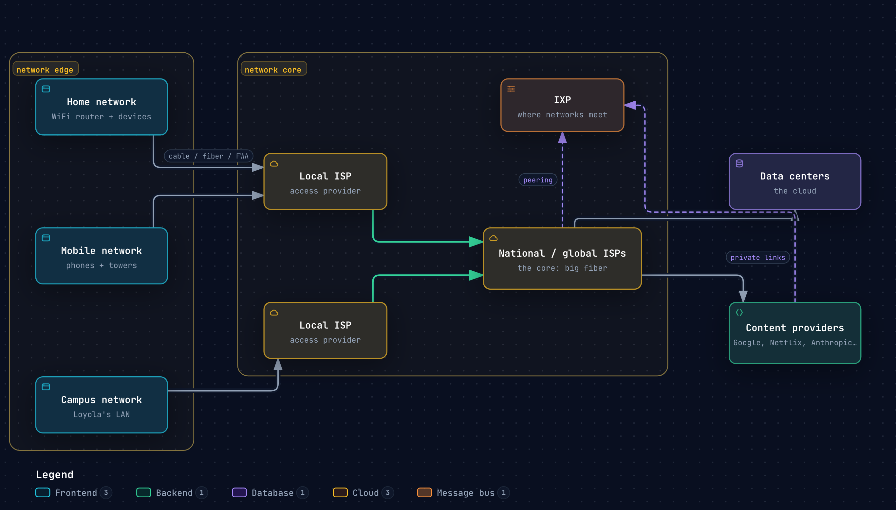
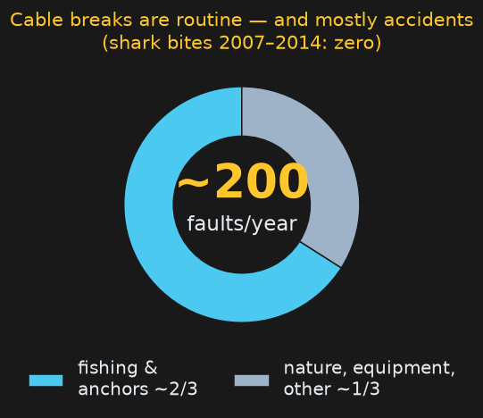
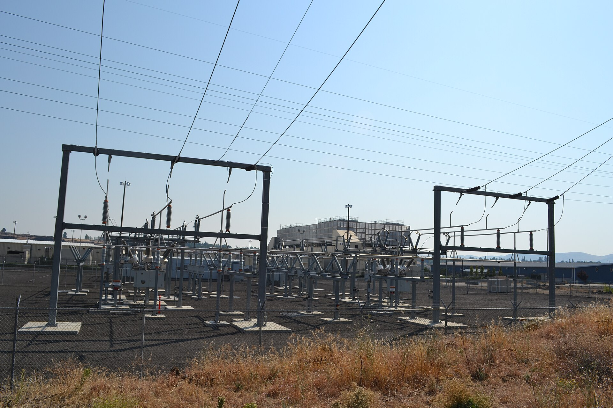
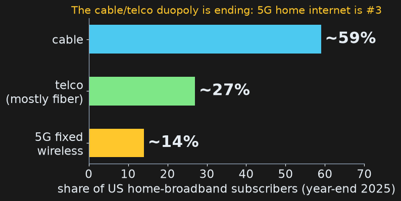
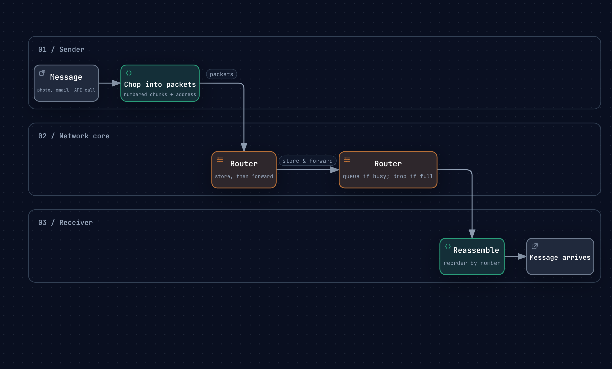
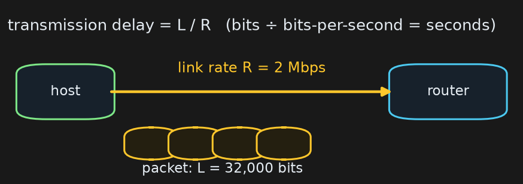
L = 32_000 # bits
R = 2_000_000 # bits per second
delay = L / R # bits ÷ (bits/second) = seconds
print(f"{delay} s = {delay * 1000} ms")0.016 s = 16.0 ms
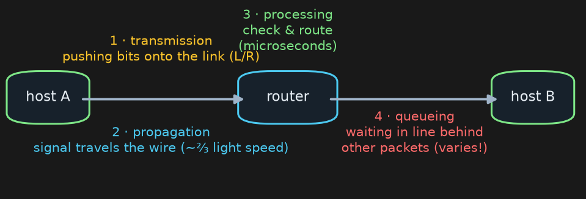
# every router (hop) on the path, with round-trip times
!traceroute -I -n google.com # in Colab (or: tracert on Windows)1 172.28.0.1 0.1 ms ← Colab's own gateway (private NAT address) 4 72.14.222.9 1.2 ms ← entering Google's network 9 142.251.46.206 2.4 ms ← destination (9 hops, ~2 ms!)
3 chi-core-2.rr.luc.edu 1 ms 7 ae-3.r25.snjsca04.us.bb 52 ms 8 ae-1.r26.tokyjp05.jp.bb 165 ms 9 203.0.113.80 166 ms
snjsca04 (San Jose, CA) → tokyjp05 (Tokyo, JP).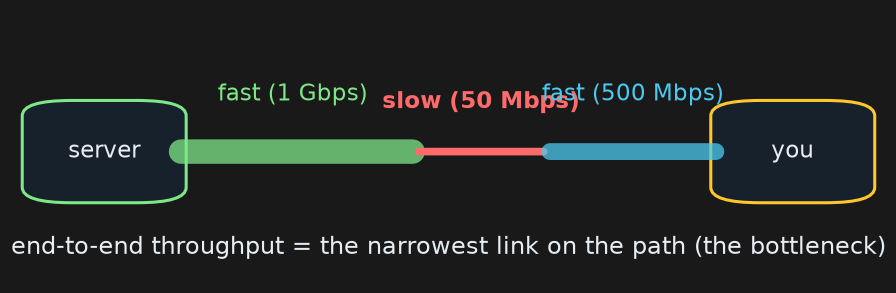
| you do | layer |
|---|---|
| buy ticket · check bag | ticketing / baggage |
| board at a gate | gates |
| take off / land | runway |
| the plane flies a route | routing |
| layer | job | you know it as |
|---|---|---|
| application | the actual conversation | HTTP, DNS, your API calls |
| transport | process-to-process delivery, in order, with retries | TCP (and UDP: fast, no promises) |
| network | route packets host-to-host across the world | IP addresses |
| link | one hop: to the next router | WiFi, Ethernet, 5G |
| physical | bits as light / volts / radio | fiber, copper, air |
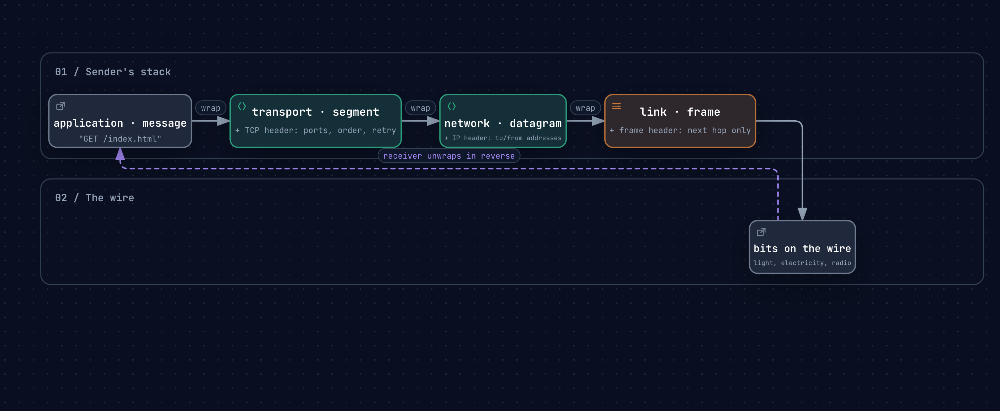
GET /schedule.html to luc.edu. Put these wrappers in the order they're added, outermost last: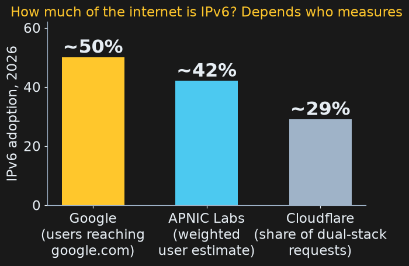
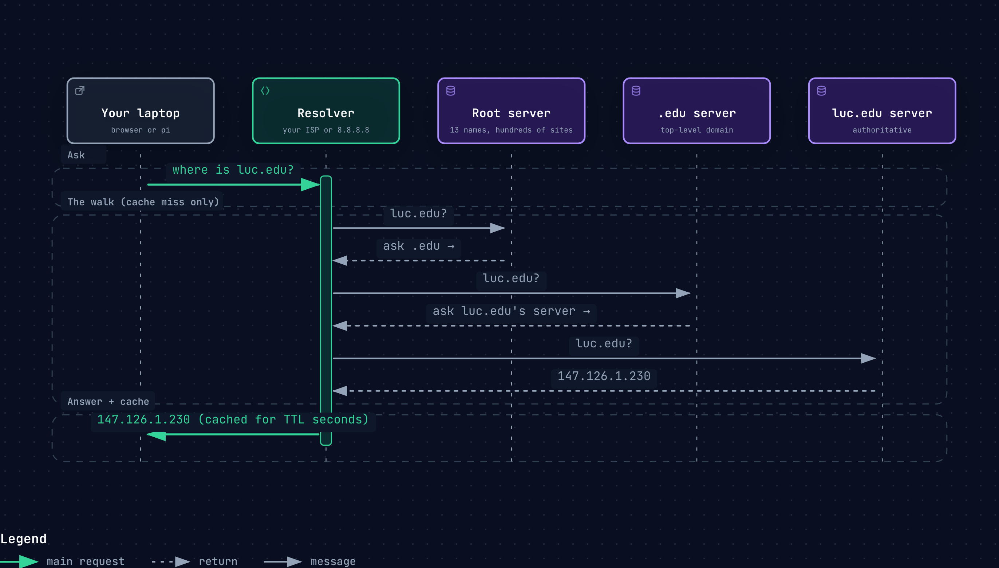
import socket
print(socket.gethostbyname("luc.edu"))
print(socket.gethostbyname("www.google.com"))13.248.133.177 142.251.153.119